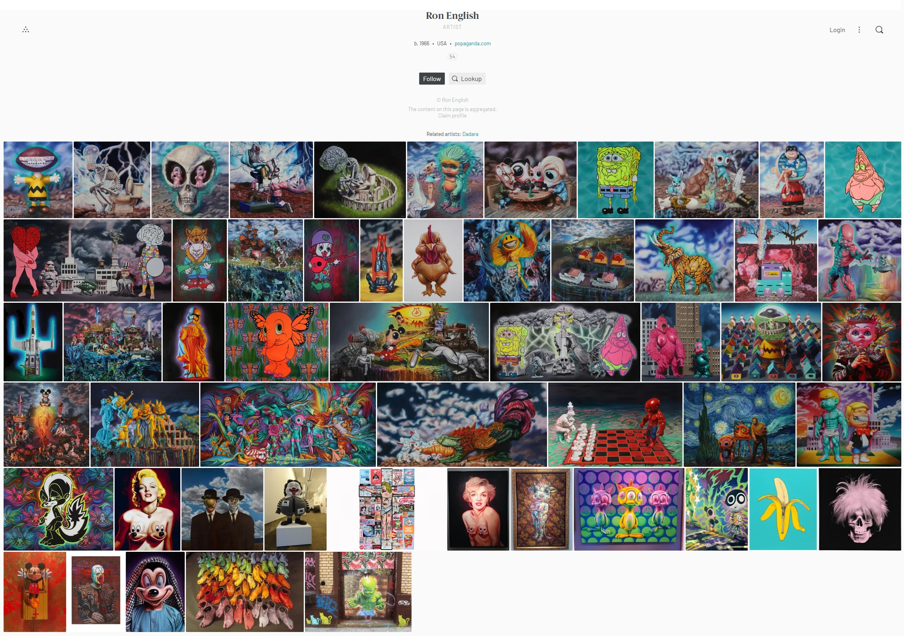
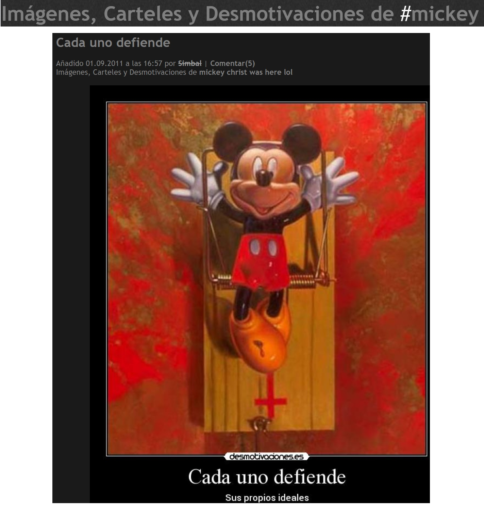

Literature
Ron English, Popaganda: The Art & Subversion of Ron English (San Francisco: Last Gasp, 2001), p. i. ISBN 1-887128-60-3.

Ron English, Death and the Eternal Forever (London: Korero Press, 2014), p. 135. ISBN 978-0957664920.

Ron English, Original Grin: The Art of Ron English (Paris: Cernunnos, 2019), p. 330. ISBN 978-2374950938.

Frederick Kaimann, “Big lofts small city,” The Central New Jersey Home News, 1999, p. 64.

Juxtapoz Magazine, November–December 1999.
Juxtapoz Magazine book-review, November–December 2001.

Juxtapoz Art & Culture Magazine, November/December 2004.

Mirror Magazine, September 15–21, 2005, vol. 21, no. 13, cover.

Milk Magazine, December 8, 2008.

FAD Magazine, July 2014.

Go Out!, September 30–October 6, 1999, vol. 1, no. 39, front cover.

“Пришла очередь Пикассо”, tanjand, LiveJournal, September 28, 2016. Online article.

“Ron English,” Eurekart, May 27, 2011. Online article.

Mark, “RON ENGLISH ‘Death and the Eternal Forever’ book launch,” UK Street Art, 2014.

“Ron English Interview,” Korero Press, June 1, 2014. Online article.
Captnbrincrunch, “Ron English,” Cultural Jamming Project, 2008. Online article.

“Owning Culture,” Gwenn Seemel, April 7, 2011. Online article.
Notes
Provenance
Private collection.
Ancillary Documentation


